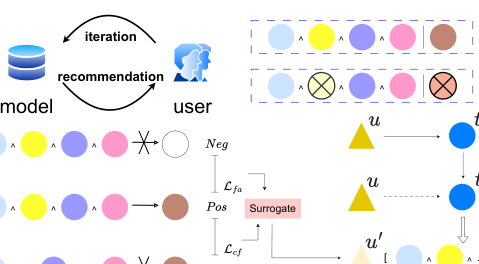
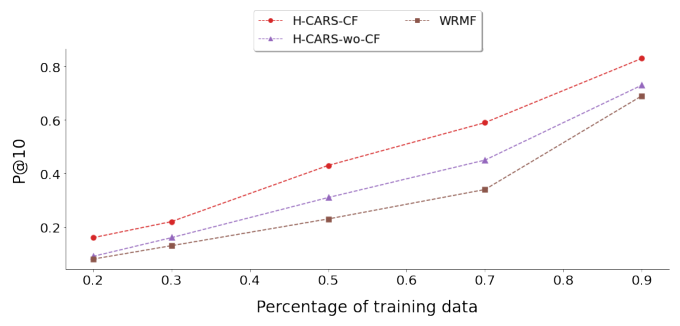

The Dark Side of Explanations: Poisoning Recommender Systems with Counterfactual Examples (解释的暗面：利用反事实样本投毒推荐系统)
- 会议/期刊: SIGIR 2023 (Short Paper, 5 pages)
- 作者与机构: Ziheng Chen (Stony Brook)、Fabrizio Silvestri & Gabriele Tolomei (Sapienza University of Rome)、Jia Wang (XJTLU)、Yongfeng Zhang (Rutgers)
- 推荐链路定位: 召回（协同过滤 Recall，训练阶段数据投毒）
- 研究方向: 去偏公平、可信隐私与工业架构 / 可解释推荐安全
- 论文原文: https://arxiv.org/abs/2305.00574v1
- 开源代码: 暂未开源
TL;DR (1分钟核心速览)
本文指出：为提升透明度而开放的反事实解释 (CF) API 恰恰泄露了推荐模型的决策边界，可被攻击者反向利用。作者提出 H-CARS，先用 CF + 事实交互联合训练一个 Horn 子句形式的神经逻辑代理模型（新增反事实损失 \(\mathcal{L}_{cf}\)），再反转传统"先造虚假交互、后看效果"的优化方向：先解出目标物品的最优嵌入偏移\(\varepsilon^*_t\)，再贪心构造虚假用户画像去逼近该偏移。在 Yelp 与 MovieLens-100K 上以 HR@10×100 度量，仅 5% 受控用户即将命中率推至 0.35（MovieLens/NCF），较 RAPU-R 提升约 21%、较 DL-Attack 提升约 52%。
Background & Motivation (背景与核心矛盾)
- 主流范式: 深度推荐模型黑盒化催生 XAI 需求，反事实解释（移除最小关键交互集 \(\mathcal{I}^{CF}_{u,t}\)使目标物品\(t\)掉出 top-\(k\)）已成为推荐解释的主流工具，且通常通过公开 API 供用户查询。
- 前人局限 (1): 已有工作（Aïvodji 等、DualCF、Pawelczyk 等）仅在分类任务上证明 CF 可被用于模型抽取与成员推理，推荐场景下的 CF 安全风险尚属空白。
- 前人局限 (2): 传统投毒工作（DL-Attack、RAPU-R）依赖在代理模型上反复"注入—重训—评估"，在只能观测部分交互、且训练代价高的黑盒推荐场景中代价高昂且易陷入局部解。
- 核心洞察 (Key Insight): CF 本身刻画了"去掉哪几条交互就会改变排序"的局部决策边界信息，因此用 CF 训练的代理模型保真度显著高于仅用事实交互的代理模型；同时 CF 天然剔除了与标签伪相关的偶然交互，起到去伪相关（denoising）的作用。
- 本文切入点: 把 CF 当作攻击者的信息源而非用户的解释工具——用 CF 抽取高保真逻辑代理模型，再以"目标嵌入偏移"为桥梁反向求解虚假交互。
Method (核心方法设计)
1. 整体框架 (Overall Architecture)
H-CARS 分两阶段闭环。抽取阶段：攻击者用公开 CF API 对部分可观测的交互矩阵 \(\mathbf{Y}\)生成反事实集，将每条交互\((u,j)\)编码为事件向量，并用 AND/OR/NOT 神经逻辑模块把"历史交互\(\Rightarrow\)目标物品"写成 Horn 子句，以 BPR 事实损失 + 反事实损失 + 逻辑律正则联合训练 NCR 代理模型。投毒阶段：不直接求解双层优化，而是从攻击目标出发反向传播——先对目标物品求得使其逻辑表达式最趋近于"真"的最优嵌入偏移，再贪心逐个生成受控用户\(m^*\)及其交互集\(\mathcal{I}_{m^*}\)，使其逻辑子句恰好指向该偏移方向，最终把伪造画像注入目标系统重训。
flowchart TD
A["部分可观测交互 Y + CF API 查询"] --> B["Horn 子句逻辑代理模型 NCR<br/>L_fa + λ1·L_cf + λ2·L_reg"]
B --> C["反转优化：求解目标物品最优嵌入偏移 ε*_t"]
C --> D["贪心生成受控用户 m* 与交互集 I_m*"]
D --> E["注入 Y' 重训目标模型 → HR@10 提升"]
2. 关键设计拆解 (Key Designs)
- Horn 子句逻辑代理 + 反事实对比损失：常规代理模型只学 \(P(y=1\mid u,i)\)的统计相关，在部分观测下会把"共现但非必要"的物品当成推荐依据，导致生成的攻击交互迁移性差。本文将交互序列写成蕴含式\(\boldsymbol{c}^+_{u,x}=(\neg\boldsymbol{e}_{u,1}\vee\cdots\vee\neg\boldsymbol{e}_{u,j})\vee\boldsymbol{e}_{u,x}\)，以\(\mathrm{sim}(\boldsymbol{c}^+_{u,x},\mathbf{1})\)作为打分；关键增量是引入 CF 子句\(\boldsymbol{c}^{CF}_{u,x}=(\bigvee_{j\in\mathcal{I}_u\setminus\mathcal{I}^{CF}_{u,x}}\neg\boldsymbol{e}_{u,j})\vee\boldsymbol{e}_{u,x}\) 并施加 $\(\mathcal{L}_{cf}=-\sum_{u}\sum_{x\in\mathcal{I}^+_u}\log \mathrm{sim}\big(\boldsymbol{c}^+_{u,x},\ \boldsymbol{c}^{CF}_{u,x}\big),\)$ 迫使"含必要交互"与"缺必要交互"两种逻辑表达在向量空间中被拉开。物理直觉：这正是对决策边界做对比式数据增广，把伪相关交互压到低权重，使代理模型对目标系统的高保真抽取在少量数据下仍成立。
- 反向优化 (Reverse Optimization) 的偏移—画像生成：直接求解双层优化 \(\max\sum_t HR(t)\)s.t.\(\boldsymbol{\theta}^*=\arg\min_\theta \mathcal{L}_{train}(\mathbf{Y}\cup\mathbf{Y}')\) 在代理模型上不可微且维度爆炸。本文改为先求目标物品的最优扰动 $\(\varepsilon^*_t=\arg\max_{\varepsilon}\ \mathrm{sim}\Big(\big(\textstyle\bigvee_{j\in\mathcal{I}_u}\neg\boldsymbol{e}_{u,j}\big)\vee\boldsymbol{e}_{u,t+\varepsilon},\ \mathbf{1}\Big),\)$ 把"提升命中率"转译为"把 \(t\)的嵌入推到\(t+\varepsilon\)"；随后每轮贪心构造新受控用户\(m^*,\mathcal{I}_{m^*}=\arg\max_{m,\mathcal{I}_m}\mathrm{sim}(\boldsymbol{c}^+_{m,t+\varepsilon},\mathbf{1})\)，即寻找在逻辑空间中"最能代言偏移后目标物品"的画像。因为只需正向推理一次代理模型即可评估候选画像，单轮开销远低于"注入—重训"的迭代搜索。
- 训练目标、负采样与推理开销：总损失 \(\mathcal{L}=\mathcal{L}_{fa}+\lambda_1\mathcal{L}_{cf}+\lambda_2\mathcal{L}_{reg}\)，其中\(\mathcal{L}_{fa}\)采用 BPR 成对损失，负样本为均匀随机采样的未交互物品（非硬负采样）；\(\mathcal{L}_{reg}\)约束逻辑模块满足逻辑律。攻击端无需梯度回传至目标模型，仅需调用 CF API 与 top-\(k\) API，属于典型黑盒、部分数据可观测的威胁模型。
Experimental Setup & Evaluation Protocol (实验设置与评估协议)
| 数据集 | #Users | #Items | #Interactions | 稀疏度/密度 | 特征/场景说明 |
|---|---|---|---|---|---|
| Yelp | 31,668 | 38,048 | 原文未报告 | 未报告 | 二值评分（隐式反馈） |
| MovieLens-100K | 943 | 1,682 | 100,000 | ≈6.3% | 评分 >4 置 1，否则 0 |
- 数据划分与防穿越: 采用比例划分，分别报告 80% 训练数据与仅 30% 训练数据两种设定，用于模拟攻击者在数据稀缺工业场景下的能力；抽取阶段固定使用 60% 交互生成 CF。
- 排名评测协议: 采用
HR@10（命中率，乘以 100 报出），即目标物品 \(t\in\mathcal{T}\)出现在合法用户 top-10 推荐列表中的用户比例\(\mathbb{P}(\{t\in\hat{\mathcal{I}}^k_u\mid u\in\mathcal{U}\})\)；基于全物品打分排序（非采样排序）。 - 攻击设定: 采样 5 个目标物品构成 \(\mathcal{T}\)；受控用户上限 MovieLens 100 人、Yelp 15 人，受控比例扫描\(\{0.5\%,1\%,3\%,5\%\}\)；学习率 0.001；\(\lambda_1=0.76,\lambda_2=10^{-4}\)（MovieLens）、\(\lambda_1=0.68,\lambda_2=10^{-5}\)（Yelp）。
- 对比基线: 目标模型 NCF、RCF；CF 生成方法 ACCENT（影响函数）；攻击基线 DL-Attack（双层优化注入）、RAPU-R（反向优化，同为最相关对手）、Bandwagon（流行度搭便车）。原文未报告显著性检验。
Key Experimental Results (实验关键数据)
1. 主实验对比 (Main Results)
下表摘取 MovieLens（80% 训练数据，NCF/RCF）与 Yelp（30% 训练数据，NCF/RCF）在 5% 受控用户比例下的 HR@10×100，并给出相对最强基线的提升：
| 数据集 / 目标模型 | DL-Attack | RAPU-R | Bandwagon | H-CARS | Improv. (vs 最优基线) |
|---|---|---|---|---|---|
| MovieLens / NCF | 0.82 | 0.86 | 0.26 | 0.91 | +5.8% |
| MovieLens / RCF | 0.71 | 0.73 | 0.14 | 0.76 | +4.1% |
| Yelp / NCF (30%) | 0.11 | 0.12 | 0.08 | 0.16 | +33.3% |
| Yelp / RCF (30%) | 0.15 | 0.16 | 0.10 | 0.20 | +25.0% |
低受控比例区间的对比（MovieLens/NCF，80% 数据）：1% 受控用户时 H-CARS 0.42 vs RAPU-R 0.38 vs DL-Attack 0.39；MovieLens/NCF（30% 数据）1% 受控用户时 H-CARS 0.18 vs 基线 0.14，相对提升 28.6%。
2. 消融实验 (Ablation Study)
原文在 MovieLens + NCF 上以代理模型的 \(P@10\) 比较三种代理，结果仅以图 2 曲线给出（未报告绝对数值），此处如实记录趋势：
| 代理模型变体 | 是否用 CF | \(P@10\) 趋势 | 说明 |
|---|---|---|---|
| WRMF | ✗ | 最低 | 传统 MF 代理，无逻辑推理能力 |
| H-CARS-wo-CF | ✗ | 中 | 仅事实交互训练 NCR |
| H-CARS-CF | ✓ | 最高 | \(\mathcal{L}_{cf}\) 引入 CF 对比信号 |

3. 关键实验发现 (Key Findings)
- CF 是代理模型保真度的关键放大器：H-CARS-CF 的 \(P@10\) 全程高于 H-CARS-wo-CF 与 WRMF，且差距随训练数据增多而扩大，说明 CF 与事实交互在数据增广上是互补而非替代关系，直接解释了投毒阶段为何能精准迁移到黑盒目标模型。
- 数据越稀缺，CF 的相对优势越大：在仅 30% 训练数据时，H-CARS 相对 RAPU-R 在 Yelp/NCF 上提升 33.3%、Yelp/RCF 上提升 25.0%，远高于 80% 数据下的 4–6%；原因是朴素反向优化在稀疏监督下难以定位偏移方向，而 CF 提供的边界信号起到了"稀疏补偿"作用。
- 受控比例上升时优势被放大而非收敛：受控用户比例由 0.5% 增至 5%，H-CARS 与 RAPU-R 的差距在 MovieLens 上从 0.05 拉大到 0.05–0.06（绝对值），Yelp/NCF 上从 0.01 拉大到 0.04；说明本文生成的虚假画像彼此方向一致（共同指向同一 \(\varepsilon^*_t\)），具备可叠加性，而 DL-Attack/RAPU-R 的画像方向噪声较大。
Highlights & Limitations (亮点、对比与审稿批判)
- 与代表作对比 (vs. Prior Work): 相较 DL-Attack 的双层优化"注入—重训"范式与 RAPU-R 的纯反向优化，H-CARS 的本质差异在于代理模型的构造方式：前两者只用事实交互拟合黑盒，本文额外消费 CF API 提供的决策边界信息，并把逻辑推理（Horn 子句）作为归纳偏置，因此生成的不是"高分共现物品堆砌"，而是逻辑上"必要"的交互组合。与 CF 安全领域前人工作（DualCF、Pawelczyk 等）相比，本文首次把威胁从分类任务的隐私泄露扩展到推荐任务的训练数据投毒。
- 可迁移亮点: (1) 用反事实样本构造对比损失 \(\mathcal{L}_{cf}\) 来抑制伪相关，这一"解释即增广"的思路可直接迁移到可解释推荐的鲁棒训练与去噪召回；(2) "先解目标嵌入偏移、再反解输入画像"的反向优化链路，可迁移到冷启动物品扶持、物品侧流量调控等需要"制造可迁移干预样本"的场景。
- 审稿级局限批判: (1) 评估规模偏小且缺乏显著性检验——仅 2 个数据集、5 个目标物品、单次运行，HR@10 的绝对差异常在 0.01–0.05 量级，未给出方差或 \(p\)值，Yelp 上 0.5%–1% 区间的优势（0.26 vs 0.25）几乎不可区分于噪声；(2) 威胁模型假设偏理想——同时要求存在 CF 解释 API 与 top-\(k\)查询 API、且假设可获取 60% 交互用于 CF 生成，真实工业系统通常对解释接口限流并对新用户画像做审核，论文也未提供任何防御基线（如注入检测、鲁棒训练、CF API 加噪）来量化攻击成本；(3) 消融仅以曲线示意，缺少对\(\lambda_1\) 及受控用户数上限的敏感性分析。
Rating (四维评分)
- 方法创新性 (Novelty): ⭐⭐⭐⭐ （首次将 CF 安全风险从分类迁移到推荐投毒，Horn 子句代理 + 反事实对比损失 + 反向优化的组合有清晰的新意，但各组件均借自 NCR/RAPU-R 已有框架）
- 评估协议与实验扎实度 (Protocol & Experiments): ⭐⭐ （仅 2 个数据集、5 个目标物品、无显著性检验与置信区间，消融只有趋势图，防御侧完全缺位）
- 写作与数学规范度 (Clarity & Rigor): ⭐⭐⭐ （Horn 子句与偏移—画像生成的推导链条清晰，但式 (12)(13) 符号存在笔误/排版错误，\(\mathcal{I}_u\setminus\mathcal{I}^{CF}_{u,x}\) 与式 (7) 的集合定义在正文中略有混用）
- 工业落地与复现价值 (Industrial & Practical Value): ⭐⭐⭐ （无需目标模型内部梯度、仅依赖公开 API，攻击成本低、威胁现实性强，对解释接口的限流/加噪设计有直接指导意义；但未开源、且未给出防御方案与在线延迟分析）